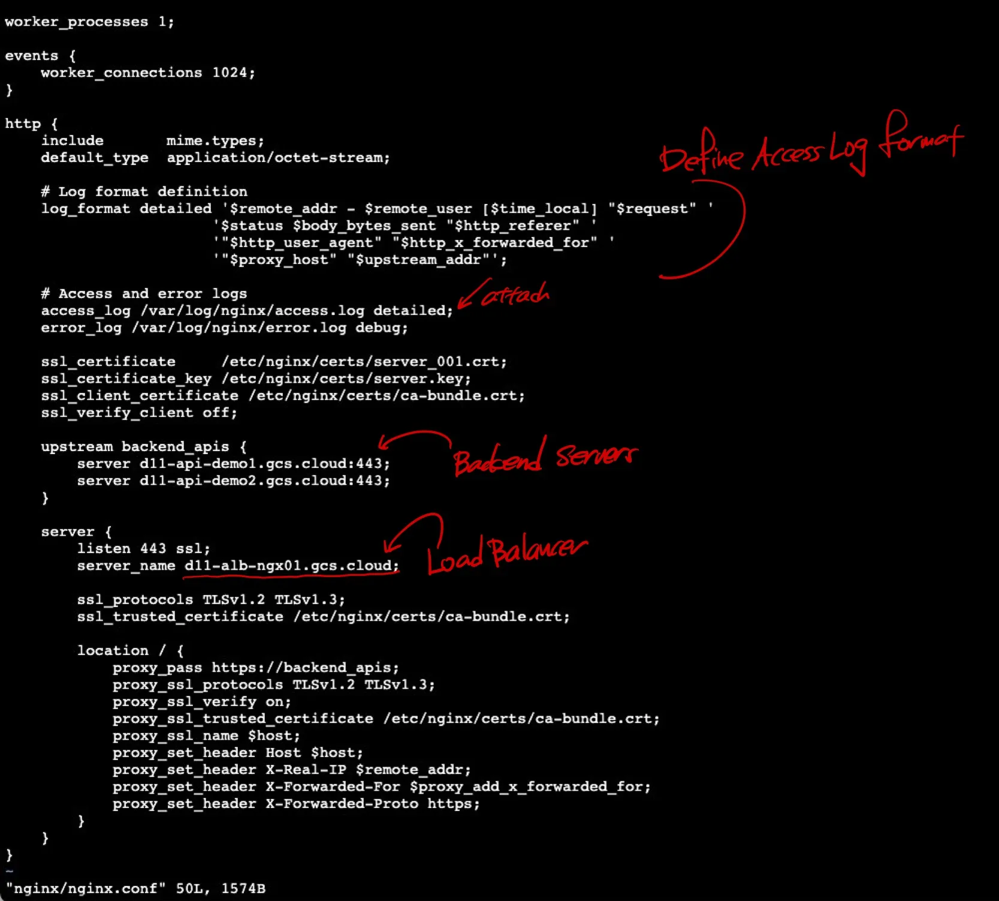

Let’s build a Dockerized NGINX setup with:
- SSL termination using a wildcard cert
- Reverse proxy + Load balancing to 2 backend servers
- Mounted volumes for certs and config
1. Updated Step for CA Chain
#Create the CA chain file:
cat mid-ca.crt ca.crt > ca-bundle.crt
| Cert file | Purpose |
|---|---|
server_001.crt |
Wildcard cert for your domain |
server.key |
Private key for the wildcard cert |
ca-bundle.crt |
Combined mid-ca.crt + ca.crt (in that order) |
2. Directory Structure (suggested)
sh-5.2$ tree
.
└── nginx-lb
├── Dockerfile
├── certs
│ ├── ca-bundle.crt
│ ├── ca.crt
│ ├── mid-ca.crt
│ ├── server-bundle.crt
│ ├── server.key
│ ├── server_001.crt
│ └── server_001.pfx
├── docker-compose.yml
├── nginx
│ └── nginx.conf
└── nginx-log
3. Create Dockerfile
FROM nginx:alpine
# Create the log directory inside the container
RUN mkdir -p /var/log/nginx
# Copy NGINX config and certs into the image (will be overridden by volume)
COPY nginx/nginx.conf /etc/nginx/nginx.conf
COPY certs/ /etc/nginx/certs/
# Expose port 443 for HTTPS
EXPOSE 443
4. Create nginx.conf
worker_processes 1;
events {
worker_connections 1024;
}
http {
include mime.types;
default_type application/octet-stream;
# Log format definition
log_format detailed '$remote_addr - $remote_user [$time_local] "$request" '
'$status $body_bytes_sent "$http_referer" '
'"$http_user_agent" "$http_x_forwarded_for" '
'"$proxy_host" "$upstream_addr"';
# Access and error logs
access_log /var/log/nginx/access.log detailed;
error_log /var/log/nginx/error.log debug;
ssl_certificate /etc/nginx/certs/server_001.crt;
ssl_certificate_key /etc/nginx/certs/server.key;
ssl_client_certificate /etc/nginx/certs/ca-bundle.crt;
ssl_verify_client off;
upstream backend_apis {
server d11-api-demo1.gcs.cloud:443;
server d11-api-demo2.gcs.cloud:443;
}
server {
listen 443 ssl;
server_name d11-alb-ngx01.gcs.cloud;
ssl_protocols TLSv1.2 TLSv1.3;
ssl_trusted_certificate /etc/nginx/certs/ca-bundle.crt;
location / {
proxy_pass https://backend_apis;
proxy_ssl_protocols TLSv1.2 TLSv1.3;
proxy_ssl_verify on;
proxy_ssl_trusted_certificate /etc/nginx/certs/ca-bundle.crt;
proxy_ssl_name $host;
proxy_set_header Host $host;
proxy_set_header X-Real-IP $remote_addr;
proxy_set_header X-Forwarded-For $proxy_add_x_forwarded_for;
proxy_set_header X-Forwarded-Proto https;
}
}
}

5. Create docker-compose.yml
version: "3.8"
services:
nginx:
build: .
container_name: nginx-lb
ports:
- "443:443"
volumes:
- ./certs:/etc/nginx/certs:ro
- ./nginx/nginx.conf:/etc/nginx/nginx.conf:ro
- ./nginx-logs:/var/log/nginx # 👈 host folder mapped to container log dir
restart: always
6. Install Docker Compose
# Download Docker Compose binary
sudo curl -L "https://github.com/docker/compose/releases/latest/download/docker-compose-$(uname -s)-$(uname -m)" -o /usr/local/bin/docker-compose
# Make it executable
sudo chmod +x /usr/local/bin/docker-compose
# Verify the installation
docker-compose --version
7. Run the container
cd nginx-lb
sudo docker-compose up --build -d
8. Check the log
sudo docker-compose logs

See also:
NGINX Load Balancer - Bare Metal
NGINX Container - Secure Web Page
NGINX Container - Load Balancer
NGINX Load Balancer for WCF App